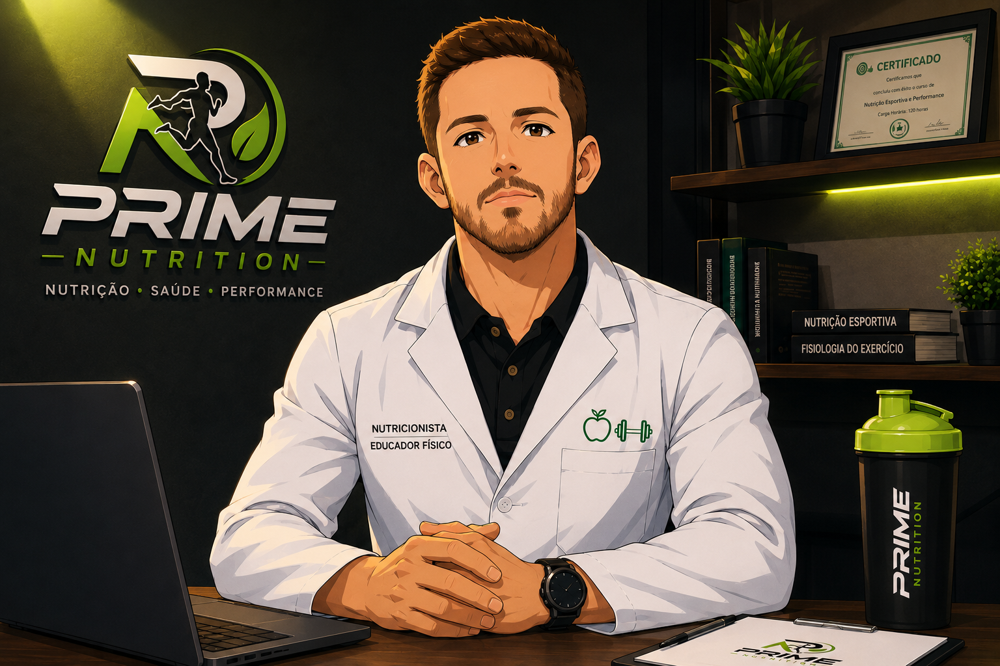

Individualidade
Cada planejamento é pensado de acordo com as necessidades e objetivos de cada pessoa.
Conheça a abordagem por trás da Prime Nutrition e a forma como transformamos objetivos em estratégias nutricionais personalizadas.

Acredito que a nutrição vai muito além de seguir uma lista de alimentos. Ela deve fazer sentido para sua rotina, seus objetivos e sua realidade.
Meu trabalho é desenvolver estratégias que possam ser aplicadas no dia a dia, buscando equilíbrio, consistência e resultados sustentáveis.
Como profissional da área e praticante de jiu-jitsu, também conheço na prática os desafios de conciliar alimentação, treinamento, recuperação e rotina.
Agendar ConsultaCada pessoa possui necessidades, objetivos, preferências e uma rotina diferente. Por isso, não acredito em soluções prontas que servem igualmente para todos.
O acompanhamento é construído a partir da realidade de cada paciente, tornando a estratégia mais prática, realista e sustentável.
Estratégias alinhadas ao que você deseja alcançar.
Planejamento adaptado à sua rotina e necessidades.
Evolução monitorada ao longo do processo.
Resultados sem deixar de lado sua qualidade de vida.
A prática de Jiu-Jitsu faz parte da minha vida e ampliou minha compreensão sobre disciplina, preparação e recuperação.
Essa vivência contribui para entender melhor a realidade de quem treina, compete e busca conciliar performance com saúde e rotina.
Uma abordagem baseada em conhecimento, individualização e acompanhamento próximo.
Cada planejamento é pensado de acordo com as necessidades e objetivos de cada pessoa.
Estratégias fundamentadas em conhecimento e acompanhamento profissional.
Buscamos estratégias que possam ser mantidas de forma consistente ao longo do tempo.
Um processo próximo para avaliar evolução e realizar ajustes quando necessário.
Agende sua consulta e descubra como a nutrição pode fazer parte dos seus objetivos.